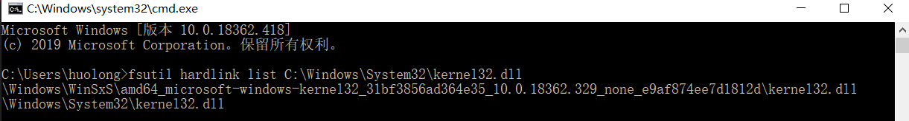

Windows系统下各种链接
0x00 硬链接
和GNU/Linux相同的是，Windows也有自己的链接创建工具mklink。Windows下的硬链接只允许在NTFS格式的文件系统下创建（通过CreateHardLink()系统调用），并且和Linux一样，硬链接的创建只能针对文件，而不能针对目录。
创建硬链接的命令时mklink /H < destination > < source >，在创建后的图标也和原文件的图标一样，在属性中也无法看出其中的链接关系。唯一的方法就是通过fsutil hardlink list < filepath >来查看一个文件包含了多少硬链接。创建硬链接后，文件属性显示空间占用是与原文件大小相同的，但是实际上它并没有占用空间，真实的空间占用为0，硬链接不会把文件再复制一份。
0x01 符号链接
创建符号（软）链接的命令为mklink < destination > < source >，也就是不为mklink提供其他的参数。建立之后，我们会发现软链接图标带有一个快捷方式样式的箭头，但是其文件属性的类型仍为原来的文件类型，Size却为0，并且有很多项都是灰色disable状态。 但是需要说明的是，通过这种方式建立软链接只能针对文件建立。如果需要给文件夹建立软链接，那么就需要通过加入/D参数来建立，详情见mklink命令说明。
0x02 junction链接
Junction是Windows NTFS特有的一种链接方式。Junction和软链接类似，也是通过记录文件路径来访问文件。但是首先，Junction只针对文件夹，我们不能为文件建立Junction；其次，当我们删除Junction链接后，原文件夹也会被删除。Junction最常用的地方是用户目录下，我们会看到一些带有快捷方式图标的隐藏文件夹，但是当我们试图去访问的时候，则会被拒绝（即使是管理员也不行）。
我们可以通过mklink /J < destination > < source >命令来建立Junction。在直观看来，Junction似乎也是介于软硬链接之间的一种奇葩存在，比如Junction的图标是带有箭头的，但是在文件夹的属性中，却看不到类似于软链接的那种shortcut选项卡，更像是硬链接的感觉。
实际上，Windows之所以要在用户目录下面建立诸多的Junction的目的就在于和老版本的软件兼容。我们知道在xp时代，程序数据通常储存在Application Data文件夹中，但是当Windows转向Vista时，目录名和位置都有所变化，变成了AppData，这样，对于以前的硬编码安装路径的程序，就会遇到安装错误的问题。于是MS决定通过Junction的方式来解决。这样当某个程序访问或写入Application Data时，其所访问的是AppData文件夹，这样就避免了版本不兼容的问题。
0x03 快捷方式
其实我们最熟悉也是最常用的快捷方式并不属于传统概念上的“链接”。虽然似乎快捷方式有点类似于软链接，但是它们的本质还是非常不同的。链接其实更贴近操作系统和文件系统的概念。而快捷方式，其实是一个真真实实的以lnk作为文件类型的文件。只不过操作系统（更确切的说是Windows的shell，explorer）可以对这种lnk文件解释而已。而快捷方式的功能其实也要比传统的Linux或WIndows的软链接的功能更强大一些。如果我们打开一个快捷方式的属性，我们就会发现原来在软链接的属性中不可修改的部分都变成了可以修改的，这里面包含了文件的打开方式，快捷键，以何种窗口模式打开等属性。
也就是说，快捷方式不同于软链接的地方，就是它不仅仅是个包含文件路径的文件，而是增加了许多其他信息。这种和窗口化相关的信息如果基于文件系统自然是非常不便的，所以MS就单独设计了lnk文件，由explorer来执行。
0x04 总结与区别
所谓硬链接，我们可以理解为硬链接持有的是文件本身（而不是路径）的引用。也就是说，当我们给一个名为a.txt的文件建立硬链接（b.txt）后，那么b.txt指向的位置就是a.txt这个文件本身，而此时，a.txt和b.txt是同级平行的，这个文本文件此时同时拥有两个文件名。当我们删除a.txt时，只是删除了a.txt这个文件名，这个文件仍然被b.txt所引用，所以我们还能够通过b.txt访问。而软链接，持有的则是原链接路径。比如a.txt位于 ../Document/a.txt ，那么为其建立软链接b.txt的内容就是 ../Document/a.txt，此时，我们访问b.txt，其实是在按照a.txt的路径去访问a.txt。如果我们这时删除a.txt这个文件，那么b.txt也会无效，因为文件已经不存在了。
而junction链接则是介于软链接和硬链接之间的一种为了解决向下兼容问题的独特链接，快捷方式则是对软链接的一种补充，ink格式的文件提供了我们对打开方式修改的能力。
关于WinSxS的补充
WinSxS位于%systemroot%\WinSxS，其中存放的是Windows系统文件以及DLL文件的若干个副本。由于应用程序可以使用同一个DLL文件，因此出于兼容性与还原至旧版本的考虑，系统会在这里存放多个不同版本的文件副本。
使用一些硬链接查看的工具可以发现，Windows当中的大部分系统文件都是该目录下文件的硬链接。因此该目录是系统正常运行不可或缺的。 为一个文件创造硬链接后使用fsutil工具查看会显示出原文件和目标文件的路径。
